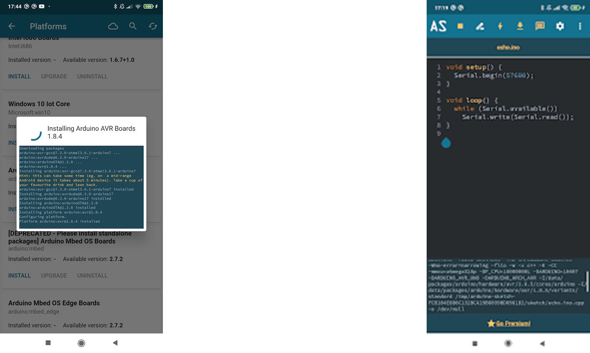

Temas:
- ¿Qué es Arduino?
- Plaqueta Arduino UNO.
- IDE Arduino Vs. Arduino Studio (Mobile).
- Descargar la aplicación de Arduino Studio.
- Interfaz de usuario de Arduino Studio.
- Crear nuevo proyecto Arduino en Arduino Studio.
¿Qué es Arduino?
Arduino es una plataforma de hardware libre, de código abierto, basada en microcontroladores utilizada, a nivel académico, para proyectos que junten la programación con la electrónica (sensores, actuadores, etc.).

Arduino IDE permite:
- Diseñar y construir proyectos electrónicos propios utilizando una placa Arduino como base.
- Programar la placa Arduino para controlar los componentes electrónicos del proyecto.
- Comparir los proyectos con otros interesados en la electrónica de todo el mundo.
Plaqueta Arduino UNO
La placa Arduino Uno es una placa microcontrolador popular basada en el microcontrolador ATmega328P. Es fácil de usar y tiene una amplia gama de características que la convierten en una buena opción tanto para principiantes como para creadores experimentados.
El Arduino Uno tiene:
- 14 pines de entrada/salida digitales.
- 6 pines de entrada analógica.
- 1 conexión USB.
- 1 conector de alimentación.
Puede ser alimentado por conexión USB o por una fuente de alimentación externa.
IDE Arduino Vs. Arduino Studio (Mobile)
IDE Arduino:
Plataforma para PC’s: Windows, macOS, Linux.
Características:
Amplia gama de funciones y herramientas.
Compatible con una amplia gama de placas Arduino (hardwrae).
Comunidad activa.
Curva de aprendizaje más pronunciada.
Arduino Studio (Mobile):
Plataforma: Móvil (Android)
Características:
Interfaz de usuario fácil de usar.
Menos funciones y herramientas que el IDE de Arduino.
Compatible con una gama más limitada de placas Arduino.
Curva de aprendizaje más suave.
Ideal para principiantes y usuarios que prefieren programar en sus teléfonos móviles.
Descargar la aplicación de Arduino Studio
- En la Play Store de tu Smartphone Android busca: Arduino Studio
- Instala la aplicación.
